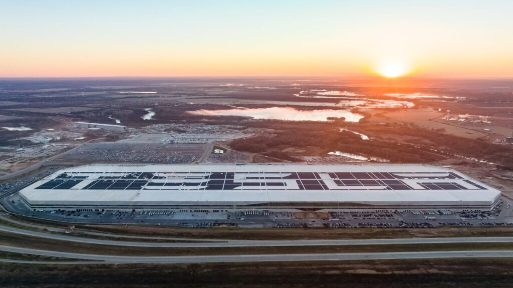
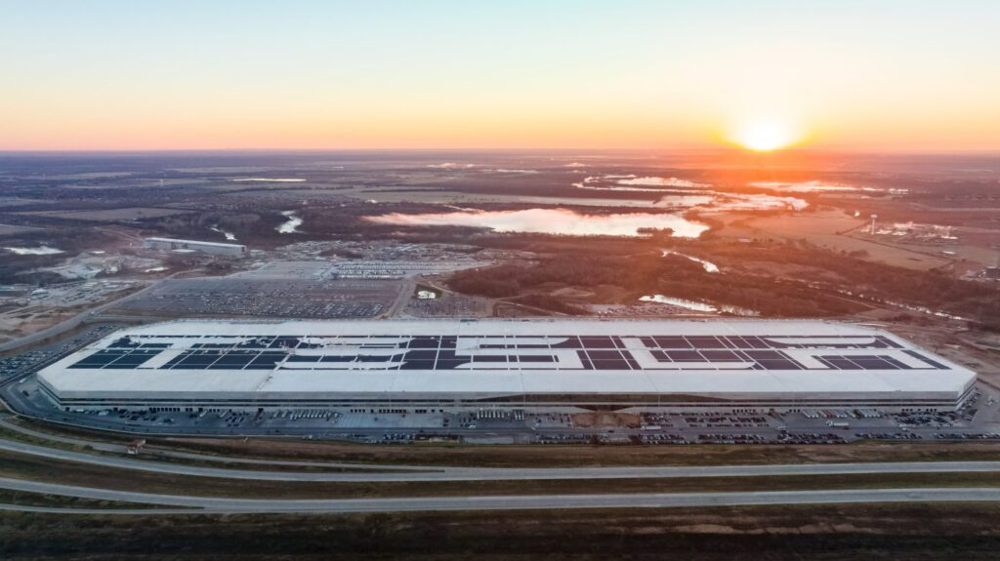

AI-Driven Employee Scheduling Software
Problem: Global factory scheduling was a manual process with near-infinite complexity (10136 combinations for a single 40-employee team), leading to sub-optimal workforce allocation. A business case I developed with Tesla's Finance Team identified a $55M/year opportunity on the Giga Texas Model Y line alone due to OEE losses from untrained assignments and $1.1M/year in wasted supervisory labor.
My Solution: I owned the full 0→1 lifecycle. I built a functional MVP and conducted User Acceptance Testing (UAT) with supervisors to validate the UI/UX. I personally developed the core optimization engine using Timefold (Java/Python), which outperformed the internal data engineering team's solution. To ensure scalability, I engineered a "Warm Start" server strategy that pre-calculates baselines overnight, reducing generation latency by 95% (from 8.62s to 0.47s per team).
Results: Acting as the Technical Product Owner, I managed the transition from my prototype to a full-stack engineering team, delivering comprehensive UI/UX design specifications and API requirements. Powered by my algorithm, this software is now used to schedule thousands of factory workers every day across Austin, Fremont, and Berlin, enforcing 100% training compliance and optimizing workforce rotation.


Model Y & Cybertruck Process Design/Simulation Software
Problem: Designing new assembly processes for Model Y and Cybertruck relied on manual calculations and physical trials. Engineers lacked a unified tool to visualize spatial constraints (reach, walking distance) and temporal constraints (cycle time) before implementation, leading to costly line-side iteration.
My Solution: I owned the full product lifecycle, from developing the initial MVP to leading User Acceptance Testing (UAT) with Process Engineers. I engineered a simulation engine using Waypoint Logic to map spatial movements (lineside tools-to-vehicle) and integrated MODAPTS standards for precise timing analysis. I iterated on the UI/UX based on direct user feedback to ensure the tool met the rigorous demands of Tesla's Process Engineering teams.
Results: I successfully deployed the tool to 20+ Pilot and Process Engineers, establishing it as the standard for pre-production validation. By enabling a virtual "sandbox" for task rebalancing and tool placement, I eliminated the need for physical trial-and-error, reducing line-stop risks and accelerating new process introduction (NPI) cycles.


Model Y & Cybertruck Process Audit & Analytics Portal
Problem: Process Engineering data was fragmented across disparate systems. Engineers wasted hours manually cross-referencing the EBOM vs. MBOM and auditing Work Instructions for completeness (e.g., missing photos), creating a lag in root cause analysis for cycle time deviations.
My Solution: I architected a centralized Process Engineering Portal using Advanced SQL and Python (Pandas). I built automated ETL pipelines to cross-validate data between the internal Work Instruction software and the Manufacturing Execution System (MES). The system automatically flags discrepancies—such as BOM mismatches or missing instruction imagery—and visualizes real-time cycle time analytics via an internal BI dashboard.
Results: This portal became the single source of truth for the Process team. It automated the assignment of correction tasks to Manufacturing Technicians, ensuring work instructions are audit-ready, and enabled engineers to perform rapid root ause analysis on production bottlenecks without manual data scrubbing.


Classified Certifications Ingestion Automation Software
Problem: The multi-billion dollar River-Class Destroyer program faced critical delays in its certification lifecycle. Conflicting data formats and requirements from BAE Systems, Irving Shipbuilding, and Lloyd’s Register created a bottleneck, making it impossible to manually verify alignment with Royal Canadian Navy standards (ANEP-77) on schedule.
My Solution: Acting as the Product Owner for the certification workflow, I harmonized conflicting requirements across external stakeholders to define a unified data standard. I then engineered an automated compliance engine using Python (Pandas), SQL, and VBA to enforce these rules. My software acted as the gatekeeper for the program, automatically ingesting, validating, and rejecting thousands of certification line items based on the acceptance criteria I defined.
Results: I successfully deployed the solution to the Certifications Team, eliminating 4,450 hours of manual processing ($380,000) annually. By establishing a "Single Source of Truth," I ensured 100% audit traceability and accelerated the program's ability to meet critical Critical Design Review (CDR) milestones.

Mobile Fleet Dispatch & Routing App
Problem: The Repair Fleet lacked visibility into trailer locations and urgency. Mechanics were driving blind, leading to high "wasted drive time" and expensive downtime for the customer's fleet. I identified this operational gap and self-started a product initiative to solve it.
My Solution: I engineered a geospatial algorithm using SQL to ingest live truck bed locations and calculate the "Nearest & Most Urgent" work order for every mechanic. I packaged this logic into a live Power BI Mobile App, creating a user-friendly interface for field mechanics. I also led the change management effort, creating user guides to drive adoption.
Results: The app is now used daily by mechanics across New Brunswick. It eliminated $60,000/year (CAD) in wasted fuel/labor for the internal team and saved the customer an estimated $150,000–$300,000/year (CAD) by significantly reducing trailer downtime.


CSC TDP Delivery Jira Automation
Problem: Supply chain and engineering teams were facing a critical data integrity issue that required manual review of Technical Data Packages (TDPs), costing significant time and money.
My Solution: I developed an automated validation script using Python (Pandas, NumPy) to clean and verify data before it entered the Jira workflow. I collaborated with supply chain and engineering teams to define validation rules and integrate the solution into existing procurement workflows.
Results: The automation saved $129,000 annually by eliminating the need for manual review and ensuring higher data quality for the program.


Reporting Metrics Data Automation Pipeline
Problem: Key operational metrics were siloed in disparate systems, requiring manual extraction and formatting to generate reports for leadership.
My Solution: I built a robust data pipeline that automates the extraction, transformation, and loading (ETL) of reporting metrics. This ensured that data was consistently cleaned and available for real-time reporting.
Results: The pipeline reduced reporting latency from days to minutes, enabling leadership to make data-driven decisions based on the most current operational status.